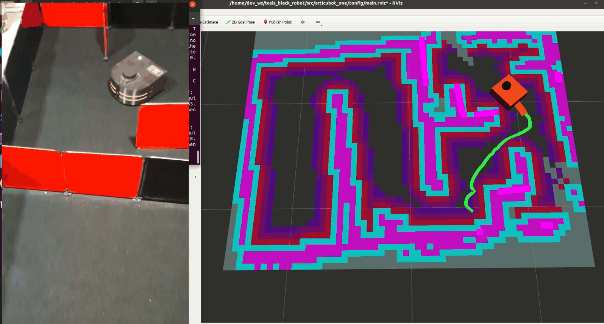

Nadie le dice al robot a dónde ir. Mira su mapa, busca los bordes entre lo que conoce y lo que no, y se dirige al más prometedor hasta que no queda ninguno. Este tema explica esa regla y por qué casi todas las metas abortadas eran reemplazos.
NivelLectura
Una corrida real de principio a fin, en bucle. El mapa crece hasta que el explorador se queda sin fronteras. Capturas de la Fig. A7.1 de la tesis.
Explorar hasta que no queden fronteras
Una frontera es el borde entre el espacio libre conocido y lo desconocido. Ir hacia las fronteras hasta que no quede ninguna es una forma simple y efectiva de explorar, y cinco de seis exploraciones del robot real terminaron solas por ese criterio. El explorador vuelve a elegir destino cada 3,3 s y manda la nueva meta sin cancelar la anterior, que Nav2 cierra como abortada. Por eso 53 de las 54 metas abortadas fueron reemplazos y no fallas.
5 de 6exploraciones terminaron solas, sin intervención del operador
53 de 54metas abortadas fueron reemplazos hechos por el propio explorador
3,3 speríodo con que el explorador vuelve a elegir destino
17veces que el explorador vació su lista negra en las corridas válidas
La idea de frontera
En 1997, Brian Yamauchi propuso una idea que sigue vigente. Para explorar un lugar desconocido, un robot debería ir hacia las regiones que separan lo que ya vio de lo que todavía no ha visto. Al llegar, observa, actualiza su mapa y vuelve a buscar 2. En su propuesta, el robot elige la frontera accesible más cercana, hace un barrido de 360° al llegar, y si no logra avanzar en cierto tiempo marca esa frontera como inaccesible.
La idea se mantiene en trabajos recientes que mejoran cómo se puntúa cada frontera 3, y convive con enfoques más complejos, como los que estiman la ganancia de información de cada destino o el active SLAM, que también considera la incertidumbre del mapa 4. Su ventaja es que necesita muy poco. Un mapa de ocupación y un sistema de navegación, justo lo que este robot ya tenía.
Explorar es repetir una pregunta simple: ¿dónde termina lo que conozco?
Pruébalo: un robot explorando por fronteras
Este simulador hace el mismo ciclo que el robot real. Mide con un láser, actualiza el mapa, busca fronteras, elige la de mejor puntaje con una mezcla de cercanía y tamaño, planifica con A estrella y se mueve. Igual que el explorador del robot, vuelve a elegir cada 3,3 s, y cuenta las metas que cambia antes de llegar.
Exploración por fronteras
Interactivo
Presiona Explorar. Activa el mapa de costos o el plano real para comparar lo que el robot sabe con lo que hay.
Simulador de exploración por fronteras. Necesita JavaScript.
Simulación ilustrativa con un plano inventado inspirado en el recinto de pruebas. La regla de puntaje y el período de 3,3 s imitan a explore_lite. La dinámica del robot, el láser y la planificación están simplificados.
Cómo decide explore_lite en este robot
El robot usa explore_lite en su versión para ROS 25, derivada del proyecto original para ROS 1. Busca fronteras sobre el mapa de costos global y envía metas de navegación a Nav2 1. Su ciclo tiene seis pasos.
DetectaUna celda desconocida que toca una libre es frontera.
FiltraDescarta las menores de 0,05 m, o sea, basta una celda.
PuntúaDistancia con peso 3 y tamaño con peso 1.
SaltaIgnora los puntos de la lista negra.
EnvíaSi el punto cambió 1 cm o más, manda una meta nueva.
RepiteCada 3333 ms, a 0,3 Hz.
La frontera según Yamauchi y según este robot
Ilustrativo
Un mismo mapa de ejemplo, con las dos definiciones. La celda suelta del medio representa una lectura de ruido del láser.
Yamauchi acepta solo regiones de tamaño parecido al robot. Con un mínimo de 0,05 m se acepta incluso una celda suelta.
Aspecto
Yamauchi, 1997
explore_lite en este robot
Qué frontera elige
La accesible más cercana
La de mejor puntaje entre cercanía y tamaño
Cuándo vuelve a elegir
Al llegar, después de un barrido de 360°
Cada 3,3 s, sin esperar a llegar
Tamaño mínimo
Parecido al del robot
Una celda de 5 cm
Si no logra avanzar
La marca como inaccesible
La anota en una lista negra
Comparación basada en Yamauchi (1997), secciones 2.2 y 2.3, y en la Tabla A5.4 y el Anexo 5.6 de la tesis.
Un tamaño mínimo de una sola celda permite elegir fronteras muy pequeñas, que pueden venir del ruido del láser o de rincones donde el robot no cabe, y eso puede alargar la exploración. No lo cuantifiqué. También documenté dos detalles del código tal como se ejecutó. El punto que se envía como centro de la frontera difiere de su centroide geométrico, y el puntaje mezcla unidades distintas, así que funciona como heurística y no como medida física 1.
Metas abortadas que eran reemplazos
En las cinco exploraciones válidas se generaron 60 metas. A primera vista el resultado es alarmante. 54 quedaron abortadas, una se completó y cinco no alcanzaron a registrar su estado final 1. ¿Falló la navegación casi siempre?
No. En la versión de Nav2 usada, cuando llega una meta nueva mientras otra está en ejecución, la anterior se termina con estado abortado 6. Y el explorador manda una meta nueva cada 3,3 s sin cancelar la anterior. El mismo estado registra entonces dos cosas muy distintas, los reemplazos que hace el explorador y las fallas reales de Nav2.
Cómo se ve un reemplazo en el tiempo
Interactivo
Reproduce 20 segundos con el período del explorador. Abajo, el resultado real de las 60 metas.
Cada 3,3 s se envía una meta nueva y la anterior queda abortada. De 60 metas, 53 fueron abortadas por reemplazo.
Una meta reemplazada. El explorador envía un destino nuevo cada 3,3 s y Nav2 cierra la meta anterior como abortada. Video del autor, en bucle.
Cómo se separaron reemplazos de fallas
Cada meta de navegación tiene un identificador único de 16 bytes. Reconstruí el historial de cada una a partir del flujo de estados de la acción de navegación, que quedó registrado completo en cada sesión. Clasifiqué una meta abortada como reemplazada cuando la meta siguiente ya figuraba en ejecución mientras la abortada seguía activa 1.
Iteración
Generadas
Abortadas
Reemplazadas por el explorador
Exitosas
Sin estado final
Tiempo activo mediano
1
18
17
16
0
1
3,3 s
3
9
8
8
0
1
3,3 s
4
12
11
11
0
1
3,3 s
5
11
9
9
1
1
3,3 s
6
10
9
9
0
1
3,3 s
Total
60
54
53
1
5
no aplica
Tabla A7.1 de la tesis. La iteración 2 se excluyó porque el robot no se movió.
Lo que se observó
En 53 de 54 abortos la meta siguiente ya estaba en ejecución mientras la abortada seguía activa. El aborto restante, la primera meta de la iteración 1, no se pudo clasificar.
La prueba que lo amarra
El tiempo mediano que cada meta estuvo activa fue 3,3 s en las cinco corridas, exactamente el período del explorador. Una falla de navegación no tendría por qué durar siempre lo mismo.
Lo que no se puede afirmar
No se identificó ningún aborto causado por Nav2, pero tampoco se puede saber si las metas reemplazadas habrían llegado a completarse.
Las cinco metas sin estado final son la última de cada corrida. Al no encontrar fronteras, el explorador pidió cancelarlas, y el registro se cerró antes de que la cancelación terminara. Entonces, ¿qué significa una meta completada de 60? Indica cuántas veces el robot llegó a menos de 10 cm del punto de una frontera antes de que el explorador cambiara de destino. No es una tasa de éxito de la navegación ni de la exploración. Lo que muestra que el robot va hacia donde se le manda es que el mapa creció en cada corrida hasta que no quedaron fronteras.
El efecto secundario: la lista negra
La lista negra existe para que el robot no insista para siempre en una frontera inalcanzable, la misma idea de Yamauchi. Un punto entra a la lista si pasan 10 s sin acercarse a él o si Nav2 responde que su meta quedó abortada. Como las metas reemplazadas también quedan abortadas, el explorador tacha fronteras que no fallaron.
Cómo entra un punto a la lista negra
Datos de la tesis
Un punto entra a la lista por falta de progreso en 10 s o por una respuesta de meta abortada, incluso si fue reemplazada.
Cuando todas las candidatas quedan tachadas, el explorador vacía la lista y vuelve a intentar. Ocurrió 17 veces en las cinco corridas válidas, 11 de ellas en la iteración 1. Este efecto no impidió terminar la exploración, pero su efecto sobre la duración del recorrido no se cuantificó 1.
La mejora propuesta es cancelar la meta en curso antes de enviar la siguiente. Así los reemplazos quedarían registrados como cancelados, que el explorador no anota, y la lista negra recibiría solo fallas reales. Otra opción es conservar el registro del navegador de Nav2. Lo planteo como trabajo futuro, junto con evaluar cómo influye la frecuencia del explorador en la duración de la exploración.
Qué se aprende de estas metas
La explicación apareció después de los ensayos, porque los contadores automáticos del script no medían lo que parecían medir. El contador de metas generadas quedó en cero, porque el mensaje que buscaba estaba en un nivel de registro que no se imprimía. Y los contadores de éxito y fallo sumaban una vez por cada mensaje de estado, no por cada meta 1.
Lo pude corregir porque guardé completos los datos crudos. De aquí salen dos prácticas que sirven en cualquier proyecto. Registrar siempre identificadores únicos de cada evento que se quiera contar, y guardar los datos crudos además de los resúmenes, para reconstruir lo que pasó cuando un número no cuadra. El tema se amplía en Lecciones de ingeniería.
Cuándo termina la exploración
Las cinco ejecuciones válidas terminaron de forma automática. En cada una, el explorador informó que no quedaban fronteras en el mapa de costos, detuvo la exploración y pidió cancelar la meta en curso. El script del ensayo detecta ese aviso, guarda el mapa y cierra el registro, sin intervención del operador 1.
Que no queden fronteras significa que el espacio alcanzable quedó mapeado. No prueba por sí solo que se cubrió todo el recinto, porque su superficie no se midió aparte del mapa. La evidencia de que las cinco corridas llegaron al mismo espacio es que el área libre fue casi idéntica en todas, como se ve en Ver y mapear.

El cierre de una exploración real. A la izquierda la cámara cenital y a la derecha el mapa en RViz, con la ruta verde hacia la última frontera. Fig. A7.1 d de la tesis.
En el mundo real
Explorar sin mapa previo es la base de los robots de búsqueda y rescate, de inspección de minas y de exploración planetaria.
El equipo ganó la final con robots con patas y aéreos que navegaron, exploraron y mapearon por su cuenta túneles, redes urbanas subterráneas y cuevas, sin GPS y con comunicación limitada.
Resolvían el mismo problema que este robot, explorar lo desconocido, a una escala y con exigencias mucho mayores. Ver el caso completo.
TesisValderas Neculqueo, S. (2026). Navegación y exploración autónoma de interiores utilizando un robot móvil de tracción diferencial. UTEM. Secciones 3.11, 4.5.6 y 5.4, Algoritmo 4.4, Tablas A5.4 y A7.1, y Anexos 5.6, 7 y 8.4.
ArtículoLiu, C. y otros (2025). Enhancing autonomous exploration for robotics via real time map optimization and improved frontier costs. Scientific Reports, 15. doi.org/10.1038/s41598-025-97231-9
ArtículoPlaced, J. A. y otros (2023). A Survey on Active Simultaneous Localization and Mapping. IEEE Transactions on Robotics, 39(3). doi.org/10.1109/TRO.2023.3248510
ArtículoTranzatto, M. y otros (2022). CERBERUS in the DARPA Subterranean Challenge. Science Robotics, 7. Versión abierta en arxiv.org/abs/2207.04914. Y DARPA (2021), Subterranean Challenge winners. darpa.mil